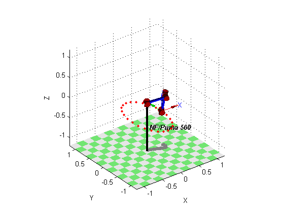
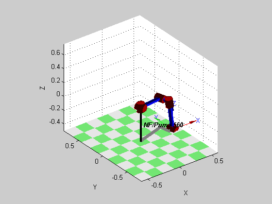

Contents
function projeto2(p560)
close all;
robot = p560.nofriction();
2.2 Desenho de elipse no chão e na parede do espaço de trabalho com o robô puma560
% Primeira elipse n1 = 50; rx = 0.5; ry = 0.7; z = -0.5; angle = linspace(0, 2*pi, n1)'; points1 = [rx*cos(angle), ry*sin(angle), z*ones(n1, 1)]; T1 = transl(points1); % Segunda elipse n2 = 50; x = 0.5; ry = 0.5; rz = 0.25; angle = linspace(0, 2*pi, n2)'; points2 = [x*ones(n2, 1), ry*sin(angle), rz*cos(angle)]; T2 = transl(points2); % Caminho entre as elipses n12 = 20; T12 = ctraj(T1(:, :, end), T2(:, :, 1), n12); T = cat(3, T1, T12, T2); % Rotação final n3 = 25; az = linspace(-37.5, -37.5+360, n3); q = robot.ikine(T); function plotFrame(n) if n <= n1+n12+n2 robot.plot(q(n, :), 'workspace', [-0.5, 0.5, -0.75, 0.75, -0.5, 0.75]); end if n <= n1 hold('on'); plot2(points1(n, :), 'r.'); elseif n <= n1+n12 elseif n <= n1+n12+n2 hold('on'); plot2(points2(n-n1-n12, :), 'r.'); elseif n == n1+n12+n2+1 snapnow; axis('off'); view(az(n-n1-n12-n2), 30); else axis('off'); view(az(n-n1-n12-n2), 30); end end plot2gif(n1+n12+n2+n3, @plotFrame, 'html/elipse.gif'); close('all');
Warning: Initial joint configuration results in a (near-)singular configuration, this may slow convergence Warning: solution diverging at step 3, try reducing alpha Warning: ikine: iteration limit 1000 exceeded (row 11), final err 0.000008 Warning: ikine: iteration limit 1000 exceeded (row 12), final err 0.000007 Warning: ikine: iteration limit 1000 exceeded (row 13), final err 0.000007 Warning: solution diverging at step 150, try reducing alpha

end